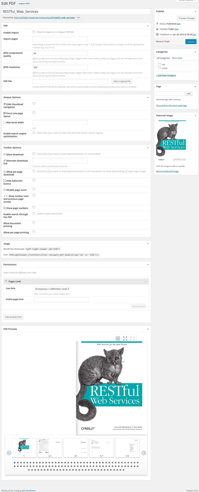

The process of publishing PDF files is the following:
- User uploads PDF document
- PDF document is parsed by the plugin
- User stays on the site until the document is parsed
- User adds the wordpress shortcode, produced by the plugin, to the page or post
-
PRO User can open Single PDF page to have PDF flipbook there.
Importing PDF file
You can go to PDFs menu item to see the list of imported PDF files.
If you just installed the plugin the list will be empty. Go ahead and import first PDF document by clicking Import PDF button.
Importing of PDF is similar to the creating regular WordPress post or page but there are some differences.

You can specify the title for the PDF. It's for internal use only, it wouldn't be shown in the default shortcode.
PRO Tip: The title will be shown on Archive and Single pages.
You're available to change some importing options such as:
-
JPEG compression quality
-
JPEG resolution
Changing these options will affect importing process.
To import PDF file choose the file from the Media Library and check the checkbox Enable import
Click Publish to start the import.

We moved the import process to the background, so you could continue to do other things on the site if needed.
The import process doesn't use the WP Cron functionality. It's triggered by browser's background (AJAX) call. We could not rely on WP Cron functionality because some servers (we faced that problem with Hostgator) doesn't allow loopback requests.
The import process will work from any admin interface page.
It will work until you leave the admin interface and will continue when you come back.
Anyway, please note, that import of large PDF files (50 pages and more) will take some time.
Also, please note, that import of large PDF files will take some server resources (memory usage, CPU time, etc.). Usage of these resources depends on PDF file size, number of pages, initial PDF resolution, etc.
That's why we separated the import process by pages.
Please, use carefully.
The import time depends on the server. Anyway, you can check import progress in notification at the top of the page, or on the PDF list page.
After import, the first page will be set as featured image of the PDF file post.
PRO Tip: Featured image will be shown on PDF Archive page.
Re-importing PDF file
To re-import PDF file, choose the new file from the Media Library and check the checkbox Enable import
Click Update to start the import.
Please note, that all previously imported pages of this document will be deleted from the disk. This operation cannot be undone.
Updating PDF file
If you just need to change the name of the PDF file or some of the Output options, you leave the option Enable import unchecked. Without checking this checkbox import wouldn't be triggered.
Deleting PDF file
If you will permanently delete PDF file post, all previews will be also deleted.
Please note, that this operation cannot be undone.
Output Options
You can change different output options such as:
- Hide thumbnail navigation
- Force one-page layout - usually book will be shown in two-pages layout when the page is wider than 800px. This setting will force one-page layout always.
- Max book width
- Max book height
- Limit book height by the viewport in fullscreen mode - plugin will try to fit the screen height
PRO Output Options
You can change different Output options such as:
- Enable search engine optimization - in this case links of thumbnail navigation will open "real" pages with PDF text included in the invisible <noscript> tag for SEO.
Please note, that SEO friendly mode and simple search will work only if PDF contains text and it was successfully parsed from the file during the import.
If you've imported PDFs in PDF Light Viewer plugin without PRO Addon, then you'll need to re-import those files to make SEO friendly mode and search functions work.
Toolbar Options
You can change different output options such as:
- Allow download - download button to download the whole PDF document
- Alternate download link - if not set, then "PDF File" will be used
- Allow per-page download - separate pages could be downloaded
- Per-page download format - you can choose JPEG or PDF
- Hide fullscreen button
- Disable page zoom - toggle mouse-over zoom function
- Show toolbar next and previous page arrows
- Show toolbar go to page control
- Show page numbers
PRO Output Options
You can change different Toolbar options such as:
- Enable search through the PDF - autocomplete ajax search of the text content of the PDF document
- Allow document printing
- Allow per-page printing
Please note, that SEO friendly mode and simple search will work only if PDF contains text and it was successfully parsed from the file during the import.
If you've imported PDFs in PDF Light Viewer plugin without PRO Addon, then you'll need to re-import those files to make SEO friendly mode and search functions work.
Changing permissions
In the Permissions section you can add limits for different user roles for this file.
If you'll choose Anonymous user role and set limit to 3, then on the Front of the site anonymous users will see only first 3 pages of the PDF file.
Shortcodes
After import you can add PDF files with shortcodes anywhere in your post or page. You can copy shortcodes from PDFs list page or compose them manually.
Preview
After import file you could preview your file exactly how it will be shown with help of shortcode on the frontend.

Visual Composer
In case when you're using Visual Composer plugin, the better approach would be to map PDF Light Viewer shortcode.

After mapping you can go to the page, when you want to have your PDF document and insert it there like shown below:

What next?
Check Advanced Usage section to get full control on the plugin functionality and look and feel.